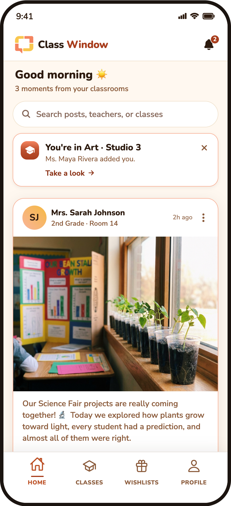
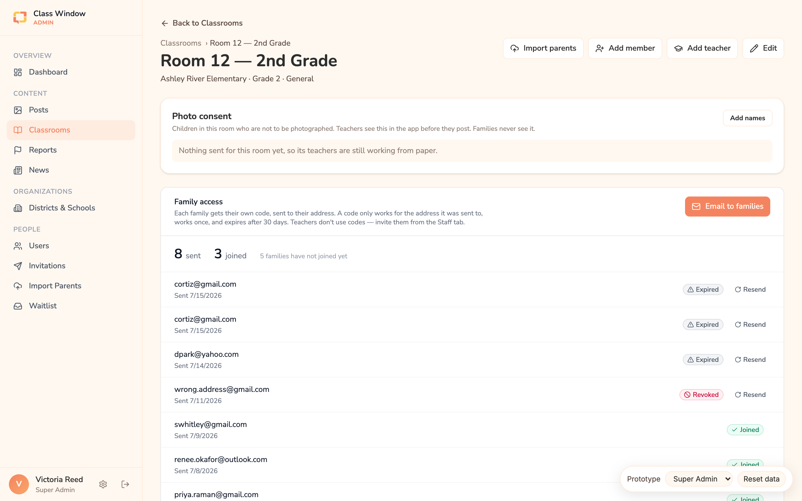
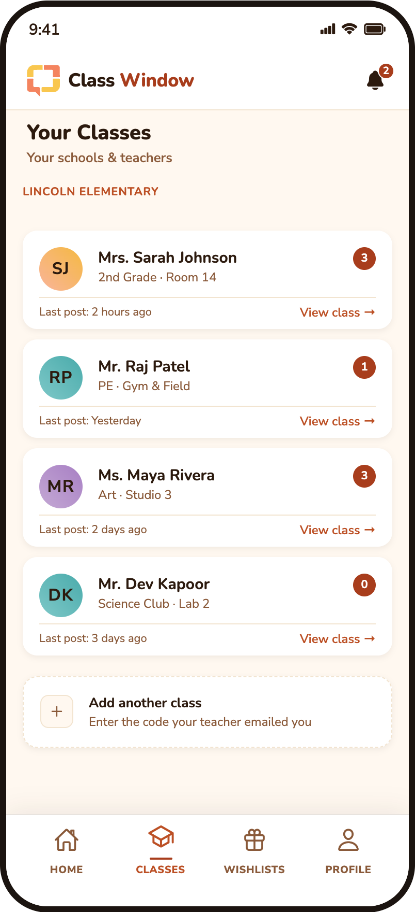
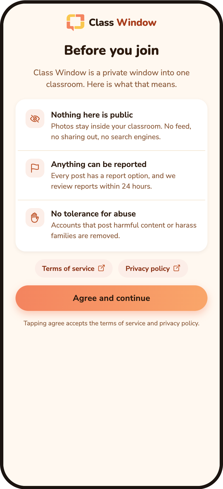
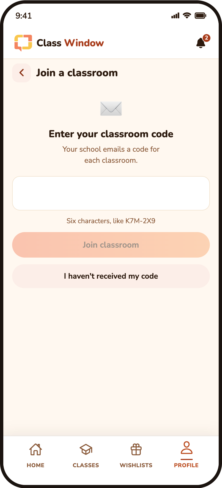
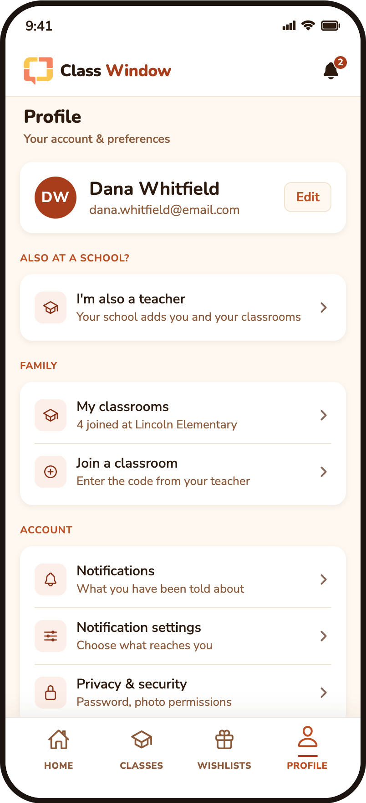
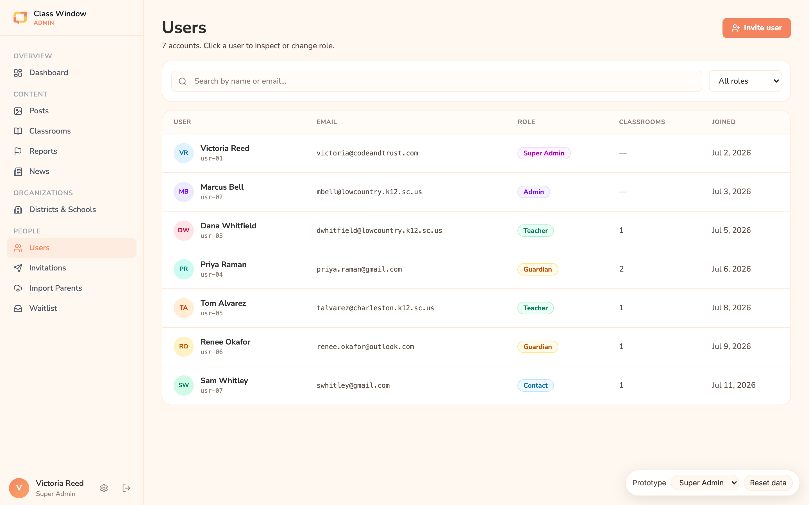

Class Window · classroom photo app for schools
Redesigning a school app whose real job is moving photographs of identifiable children out of a classroom, and only to the right people.
Victoria Reed · Product & UX Design Lead · 2026

The brief
Class Window is a private window into one classroom: a teacher photographs the room, families see it, nothing leaves. The ask was to rebuild the phone app on a real design system and close the gap with the brand.
One fact reorders everything. What moves through this app is photographs of identifiable children, held in a small private group. That single fact changes what "good enough" means, so I reframed the work around one question before touching a screen.
Who is allowed in, and what is allowed out?
Research
Primary research, not inference from a codebase: a practising elementary teacher answering directly about how schools really work. Where her account contradicted an assumption in the app, the assumption was what changed.
Alongside that, a flow map derived from the two shipping codebases, so every claim about the current app pointed at a file or a commit instead of a memory.
Roughly one child per class is on the no-photo list. It lives on paper, in the office. Teachers consult it from memory, holding a phone, in a room full of children. When a child ends up in a shot anyway, they blur the face by hand.
Where the app was
Fork in the road · one
The realistic failures here are not attackers. They are mundane and social: a code gets forwarded into a group chat, access outlives the relationship, a typo lets in a stranger, and a family asks who saw the photo and nobody can answer.
Whoever holds it is authorised. That is its whole nature, and no amount of design changes it. Good at working with no prior data, and at handing access to someone standing in front of you. Bad at binding access to a person, and it leaves no record of who redeemed it.
The address arrived through the school's own administrative process, not self-service. Forwarding the mail grants nothing. Removal is one person at a time instead of rotating a code on everybody. Bad at anyone not on the list, and a typo fails silently.
A code fails by over-sharing, which is invisible and compounds over time. Email fails by bad data, which is visible and correctable, against a list the school says is already clean. Given photographs of children, prefer the failure you can see.
What actually happened
My verdict was teachers by email only, no code ever, because teacher access is the most powerful in the product. The owner's call came back the other way: teachers email codes to families. Built and shipped to the prototype as asked.
Arguing it twice would have cost the week and changed nothing. Instead I wrote down exactly what the decision costs, then found the single change that keeps the owner's flow and closes most of the gap.
The teacher still hits "Email to families." Each family still gets a code. It just stops working for anyone else, stops working twice, and expires after 30 days. A backend rule, not a redesign, and the record of who was let in comes back with it.
Written up as REQ‑1 and annotated onto the designs, with the argument for removing codes entirely kept underneath, for whoever revisits it.
The rule, built

Per-family codes with a state each: sent, joined, expired, revoked. The office owns the list, because the office already owns the list. And the room's no-photo names are sent from here, with the honest empty state: "Nothing sent for this room yet, so its teachers are still working from paper."
Fork in the road · two
The feed was going to lead with a row of children, because that is how a family with two kids actually sorts their day. The reasoning was right. The key was wrong: there is no student record anywhere in the schema, and adding one means holding a database of minors.
So the feed sorts by grade, which is already a property of the classroom. Siblings are almost never in the same grade, so "2nd Grade" and "5th Grade" separate two children as reliably as their names would. Twins fall back to teacher names, which is how families talk anyway.

Rejected on purpose
It solves recognition, not organisation. It asks a parent to do configuration work before any payoff. And stored on our servers it is a child's name in an unstructured free-text field, which is harder to govern than a proper record would have been. If it ever ships it stays on the device, and never appears in a push notification.
Face detection would automate the no-photo list perfectly, and it is the wrong answer. Running it across children whose families specifically asked that their child not be photographed inverts the entire point of the waiver. No guardian who signed one would want their child's face enrolled to enforce it.
The second one is the reason the feature is a teacher marking it by hand. The cheapest correct answer was not the cleverest one.
The fix
A roster of children is a database of minors, with everything that carries. What a teacher needs is smaller: the sticky note she would have written anyway, kept where she will actually see it.
The way in
A locked code screen with no back button was the first thing a new family saw. Now the code is a step you take inside the app, from your profile, whenever your teacher's email arrives. And the first screen is not a form: it is the app saying, in four lines, what it does with your child's photo.

Say the deal before the sign-up form

Join from inside, with a real way out

One person, both roles, one account
The thing teachers actually do
Two ways, because those are the two that happen: copy it into the message you are already writing, or hold up a QR code for a parent at pickup.
And rotating a code now asks first. One tap next to Copy used to kill every code already handed out, with no warning and no undo.
One word, every screen
It is what the school's own records say, and "parent" is the term the institution we sell to uses least. Changed across the role switcher, the profile, the verified screen, the help copy and the classroom notes. The internal identifier stays role: 'parent' in code, because renaming the type touches every screen for no user-visible gain. The string a person reads is the part that matters.
Accessibility
The audit came back with the same colour in every row: white on orange at 2.53:1, orange on white at 2.53:1, on chrome that repeats across every screen in the app.
Darkening the orange until white passes lands on a terracotta that stops looking like the marketing site. So the fill kept the brand and the ink flipped instead: the same gradient with dark type on it measures 6.59:1. One primary button, one sanctioned exception, seventeen tokens, no dark mode.
Two of those are darker than the published style guide, because as published they do not clear the 4.5:1 floor for body text. Recorded in the theme file with the measured ratio on every token, so nobody quietly copies a failing hex back off the guide.
Research to design
What shipped
Fifteen changes, smallest first, each written as what it does now, what it would do instead, and why it is worth doing. Plus a clickable 29-screen prototype with zero network calls, published so anyone can open it on a phone and argue with it.
Handoff
It path-aliases straight into the production components, with the auth and the database shimmed and fixtures in front. Editing the real files updates the prototype live, and the handoff to the developer is a git diff instead of a spec someone has to re-type.

Outcomes
A breach is survivable if you can account for it. Per-family, single-use, address-bound codes turn "someone redeemed it" into "here is who was let in, and by whom."
The no-photo list moved from a filing cabinet to the screen a teacher is looking at while she posts, without the app ever holding a record of a child.
The visual system shipped to the native app as a 16-ticket rebuild. The rest is a 29-screen prototype and a ranked list, not a pitch.
Building something people hand their private life to? Let's talk.
Try the clickable prototype